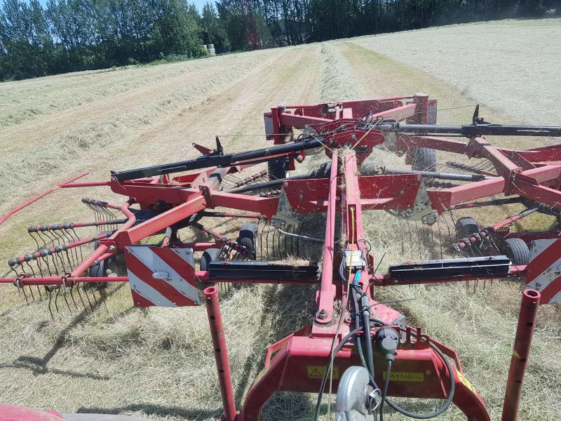
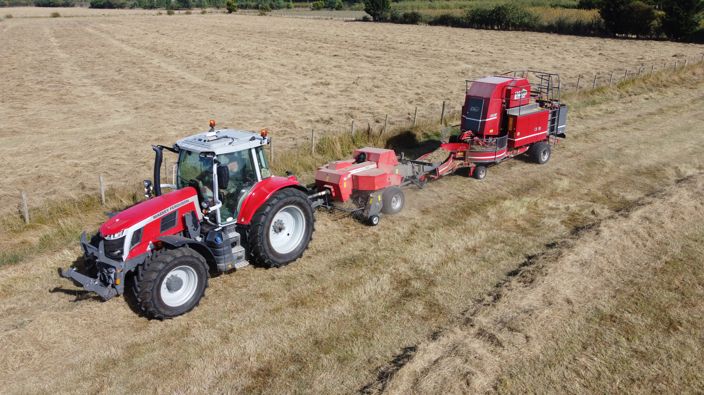

Mowers

Description of the Mowers equipment.
Description of the Mowers equipment.
Description of the Turner equipment.

Description of the Rake equipment.
We have three types of bailers for you to choose from:

Description of the Round Bailing equipment.

Our Massey Ferguson SB 18425 convential balier paired with the Bale Barron produced packs containing 21 convential bales.
Description of the Heston bailing equipment.
Description of the Bail and Wrap equipment.
Description of the Carting equipment.